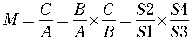

では，顕微鏡はどのようなすごい方法で，拡大率を稼いでいるのでしょう？
実は．．．
レンズを二枚おいているだけ
なのです．．．．
下の図を見てみましょう．
左側は，先ほどと同じ．
焦点，F1を持つレンズによって，Aという鉛筆が拡大されて，Bの位置に結像します．
その先に，もう一枚のレンズを置くのです．
ここで，ポイントは，
2枚目のレンズの焦点位置より外側に，結像像Bが来るように，2枚目のレンズを置く
と言うものです．
すると，Bの像が2枚目のレンズで拡大されて，Cの像を結像します．
このときのトータルの拡大率は，

となり，二つのレンズの拡大率のかけ算となるのです．
では，具体的に，計算してみましょう．
簡単のために，2枚のレンズの焦点距離は同じ，100mmとしましょう．
S1＝150mm
なら，
S2＝１／（1／100－１／１５０）＝３００
となり，1枚目のレンズでの拡大率は，３００／１５０＝２倍
次に，
S3=１５０mm
とした場合，
S4=１／（1／100－１／１５０）＝３００
となり，２枚目のレンズでの拡大率は，３００／１５０＝２倍
トータルで，
２倍×２倍＝４倍
となるのです．
もし，おのおのが１０倍ならトータルで１００倍となるのです．
このようにして，顕微鏡は倍率を稼いでいるのです．
なら．．．．レンズを２枚使うことで倍率を稼げるのなら，３枚使えば，もっと倍率が上がる？４枚なら？５枚なら？
と，とてつもなく大きな拡大率を作ることができます．
しかし．．．．そうはいかないとことが光の難しさ．．．．
では，次に分解能について説明しましょう．